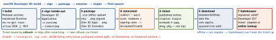

security-build · folio
In one line: The channel decides who may install and who vouches: App Store, TestFlight,
Custom and Unlisted apps go through App Review and are re-signed by Apple; Ad Hoc
and Enterprise run on your signature + profile; a Mac app outside the store is signed
with Developer ID, uses the hardened runtime and is notarized — an
automated malware + signing scan whose ticket Gatekeeper checks at first launch.
“Notarization” for iOS (EU, via alternative marketplaces or the web) is a different thing: a
baseline App Review.
Download PDF Print view LaTeX source

| Channel | Signing | Who can install | Review | Know this |
|---|
| App Store | Apple Distribution → Apple re-signs | public | App Review | store builds unaffected by your cert expiring |
| TestFlight | same build + profile | internal / external testers | Beta App Review (external) | the same .ipa is promoted to the store |
| Ad Hoc | Apple Distribution + ad hoc profile | registered UDIDs only | none | 100 devices per product family per membership year; disabling frees no slot — reset only at renewal |
| Enterprise / In-House | In-House cert + profile | own employees only (MDM) | none | Enterprise Program $299/yr, 100+ employees; customer use breaks the agreement; revoked/expired cert → every install stops launching |
| Custom app | Apple Distribution, App Store record set Private | named orgs via Apple Business / School Manager | App Review | Apple’s preferred path for internal apps; distribution method fixed once approved |
| Unlisted app | App Store record + request | anyone with the link | App Review | not in search/charts; also assignable via ABM/ASM |
| Developer ID (macOS) | Developer ID Application / Installer | anyone who downloads | notarization (automated) | expired cert: signed + timestamped builds keep running; revoked: no new installs |
| Mac App Store | Mac App Distribution + Mac Installer Distribution | public | App Review | App Sandbox required |
| EU alt. marketplace / Web Distribution | Apple encrypts + signs after notarization | EU users, iOS 17.4+ (web: 17.5+) | iOS Notarization (guideline subset, automated + human) | installed only from an authorised marketplace or your registered domain |
How macOS notarization works
- Requirements: every executable signed with Developer ID (not Development/Distribution/ad hoc) + hardened runtime + secure
timestamp; no
get-task-allow; SDK ≥ 10.9; ASCII-XML entitlements. Mandatory since macOS 10.15 (software built after 1 June 2019).
- Hardened runtime blocks JIT,
DYLD_* env vars, foreign dylibs, debugger attach — each re-enabled only by a com.apple.security.cs.* entitlement (allow-jit, disable-library-validation…).
- What is scanned: malicious content + code-signing problems; an audit trail per signing key is kept.
- Tools:
notarytool (Xcode 13+). Apple stopped accepting altool and Xcode 13- uploads on 1 Nov 2023. Auth: keychain profile (Apple ID + app-specific password + Team ID) or an App Store Connect API key (--key --key-id
--issuer).
- Packaging: notarize the thing you ship; a
.zip can’t be stapled (staple the app, then re-zip). DMG: sign the app, build the DMG, sign the DMG, notarize + staple the DMG. Installer: pkgbuild (component) / productbuild (product archive), signed with Developer ID Installer; custom installers = two rounds (payload, then installer).
iOS outside the App Store — EU (and Japan)
- Reviewed under the Notarization Review Guidelines only (security, privacy, device integrity) → alternative channels only; full App Review → both.
- Apple encrypts and signs every alternatively distributed app; install checks for tampering and an authorised source; known malware → won’t launch, installs blocked.
- Marketplaces need Apple’s authorisation (USD 1 M letter of credit). Japan: iOS Notarization too.
Remember
“Sign inside-out with a timestamp and the runtime, notarize the outermost thing,
staple what you ship.”
Example — Developer ID release of a DMG
ID="Developer ID Application: Alice (ABCDE12345)"
codesign -s "$ID" -o runtime --timestamp -f App.app
hdiutil create -volname App -srcfolder App.app -ov -format UDZO App.dmg
codesign -s "$ID" --timestamp App.dmg
xcrun notarytool store-credentials AC --apple-id alice@example.com \
--team-id ABCDE12345
xcrun notarytool submit App.dmg --keychain-profile AC --wait
xcrun notarytool log <submission-id> --keychain-profile AC
xcrun stapler staple App.dmg && xcrun stapler validate App.dmg
spctl -a -vvv -t exec App.app
productbuild --component App.app /Applications \
--sign "Developer ID Installer: Alice (ABCDE12345)" App.pkg
Certificate facts that decide channels
- One certificate of each distribution type per team — except Developer ID; only the Account Holder or an Admin can create distribution certificates.
- Developer ID Application expired: existing builds still install and run; Installer expired: pkgs install only if timestamped; revoked: no installs.
Traps
- Notarized ≠ reviewed: macOS notarization is automated malware/signing scanning; App Review is a different process.
- Signing a DMG with Developer ID Installer, or a pkg with Application — each container has its own certificate type.
codesign --deep “fixes” the notary’s nested-code complaint but stamps the app’s entitlements on every helper — sign each item.- Missing
--timestamp: the notary rejects it (“does not include a secure timestamp”); for a pkg the timestamp is what keeps it installable after the Installer cert expires.
- Enterprise cert for customers/betas — revoked → every copy dies; use Custom apps.
Related: code signing & iOS CI/CD (profiles, TestFlight, fastlane) ·
code signing internals (cdhash) · signing troubleshooting